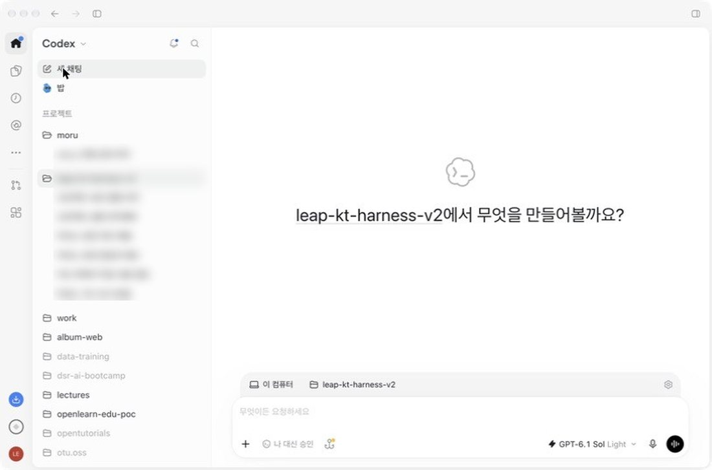
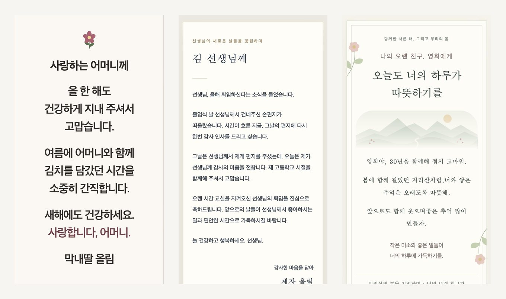
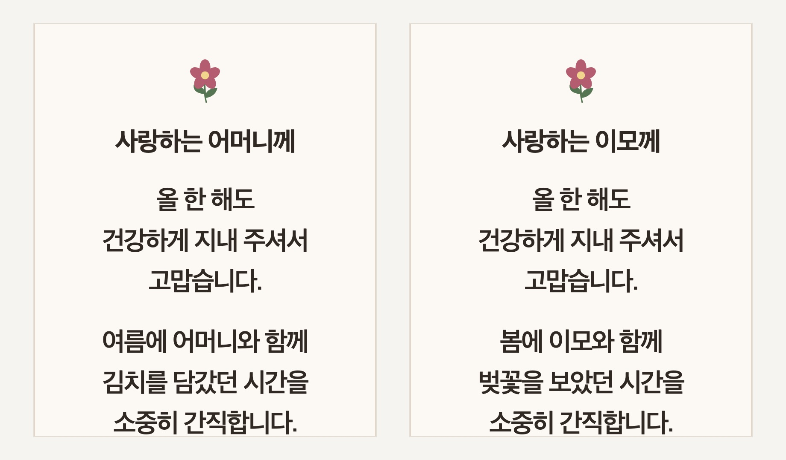
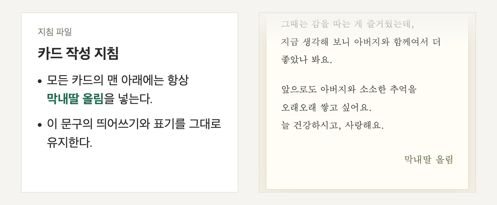

에이전트
잘 쓰는 방법
목표 오늘 하나만 남기면 됩니다: 내 방식 하나를 골랐다. 세 가지 방식을 모두 익히게 하려고 하지 마세요.
지난주와 연결 1주차 끝에서 오늘 주제를 ‘맡기는 범위를 넓힌다’로 예고했습니다. 그 내용은 다음 주에 다룹니다. 오늘은 그 전에 필요한 원리와 세 가지 방식을 다룬다고 한 문장으로 알려주세요.
첫 마디 “지난주에는 에이전트가 일을 해내는 모습을 보셨습니다. 오늘은 에이전트가 무엇인지, 어떻게 요청하면 더 좋은 결과를 얻는지를 배웁니다.”
- 01지난 한 주 이야기
- 02에이전트는 무엇인가
- 03세 가지 방식, 하나씩 직접 해보기
- 04내 방식 찾기
말할 것 목차를 한 줄씩 읽지 마세요. 손으로 훑고 10초 안에 넘기세요.
시간 배분 앞의 30분은 제가 말하고, 그 뒤로는 방식 하나를 듣고 바로 해보는 순서를 세 번 반복합니다. 화면에는 적지 않았습니다. 말로만 하세요.
전환 “먼저 지난 한 주 이야기를 듣겠습니다.”
지난 한 주,
뭐가 잘 안 됐나요?
진행 5분 동안 두세 명에게 듣습니다. 잘된 일보다 잘 안 된 일을 먼저 물으세요. 잘 안 된 일부터 들으면 같은 경험을 한 다른 수강생도 말을 꺼내기 쉬워질 수 있습니다.
쓰는 법 답을 평가하지 마세요. 들은 사례를 공유 메모에 적어 두고, 30분 뒤 ‘내 상황은 모릅니다’ 장에서 다시 언급합니다.
분류 예상되는 사례는 다섯 가지입니다. 작업 폴더를 고르지 않았다, 목적과 기준을 알려주지 않았다, 승인 요청을 보지 못했다, 확인 방법을 요청하지 않았다, 한 번에 너무 큰 일을 요청했다. 화면에는 없습니다. 강사만 알고 계세요. 다른 종류의 사례가 나오면 적어 두세요.
바로 답할 것 폴더를 고르지 않았거나 승인 요청을 보지 못한 사례는 그 자리에서 해결 방법을 알려주세요. 한 번에 너무 큰 일을 요청한 사례는 다음 주에 다룬다고 알려주세요. 오늘 다루는 사례는 목적과 기준을 알려주지 않은 경우입니다.
하나 더 물을 것 “어떻게 요청할지 몰라서 아예 못 해본 일이 있나요?” 이 답은 두 번째 방식을 설명할 때 예로 씁니다.
잘 안 된 데에는
이유가 있습니다
핵심 수강생의 능력이 부족해서 생긴 일이 아니라는 점을 여기서 분명히 말하세요.
전환 “이유를 알려면 에이전트가 어떻게 작동하는지부터 알아야 합니다.”
에이전트는
무엇인가
이 구간의 목적 세 가지를 25분 안에 전합니다. 에이전트의 구조, LLM이 문장을 만드는 원리, 모델을 만든 사람도 능력의 범위를 다 알지 못한다는 사실입니다.
주의 LLM은 처음 말할 때 ‘대규모 언어 모델’이라고 풀어서 말하고, ChatGPT 안에서 답을 만드는 모델이라고 설명하세요. 토큰, 파라미터, 트랜스포머 같은 말은 쓰지 마세요.
에이전트 = LLM +
도구 사용 + 반복
LLM: ChatGPT 안에서 답을 만드는 대규모 언어 모델
첫 마디 “지난주에 본 에이전트를 한 줄로 적으면 이렇습니다.”
핵심 에이전트는 LLM에 두 가지 기능을 더한 프로그램입니다. 하나는 파일을 읽고 쓰고 프로그램을 실행하는 도구 사용입니다. 다른 하나는 결과를 확인하고 목표에 못 미치면 다시 하는 반복입니다.
용어 LLM은 화면에 처음 나오는 말입니다. ‘대규모 언어 모델’이라고 풀어서 말하고 아랫줄을 한 번 읽어주세요.
지난주와 연결 지난주 ‘챗봇에서 에이전트로’ 표의 내용입니다. 실습 때 Codex 화면에 작업 내용이 차례로 표시됐습니다. 그 화면이 이 반복입니다.
전환 “도구 사용과 반복은 지난주 실습에서 보셨습니다. 오늘은 LLM이 어떻게 작동하는지를 설명합니다.”
주의 기술 용어를 더 늘리지 마세요. 이 한 줄이면 충분합니다.
“대한민국의 수도는 ?”
진행 수강생에게 먼저 묻습니다. 채팅으로 답을 받고 다음 장으로 넘어가세요.
말할 것 “방금 여러분이 하신 일이 LLM이 하는 일입니다.”
LLM의 원리,
다음 낱말 예측
핵심 LLM은 앞에 쓴 문장을 읽고 다음에 올 낱말의 확률을 계산합니다. 그 확률에 따라 낱말 하나를 고르고, 고른 낱말을 문장 뒤에 더한 다음 같은 계산을 반복합니다.
말할 것 “앞에 쓴 문장이 달라지면 다음 낱말도 달라집니다. 요청을 바꾸면 결과가 달라지는 이유가 이것입니다.”
주의 ‘LLM은 문장을 미리 계획하지 않는다’고 말하지 마세요. 모델이 뒤에 올 낱말을 미리 정해 둔다는 연구 결과가 있습니다 (Anthropic, 2025, Tracing the thoughts of a large language model). ‘한 번에 낱말 하나씩 내놓는다’까지만 말하세요.
같은 요청,
달라지는 답
쓰는 법 이 장의 그림으로 설명하세요. 직접 보여주려면 강의 전에 같은 요청을 새 채팅 두 개에 보내고 결과를 띄워 두세요. 수업 중에 결과를 새로 만들기에는 2분이 부족합니다.
앞 장과 연결 ‘대한민국의 수도’처럼 답이 하나로 정해진 질문은 답이 같습니다. 인사 카드처럼 여러 가지로 만들 수 있는 요청은 보낼 때마다 결과가 달라집니다.
왜 달라지나 이유는 두 가지입니다. 첫째, LLM은 확률이 가장 높은 낱말만 고르지 않고 확률에 따라 고릅니다. 둘째, 원하는 형식을 알려주지 않았습니다. 형식을 알려주면 차이가 줄어듭니다.
체크인과 연결 체크인에서 ‘요청한 것과 다른 결과’ 사례가 있었다면 여기서 다시 언급하세요.
“127 + 385 = ?”
이 낱말을 맞히려면 덧셈을 할 수 있어야 합니다.
이 장의 역할 지난주에 AI가 수학 난제를 풀었다고 소개했습니다. 낱말을 고르는 모델이 어떻게 수학 문제를 푸는지에 답하는 자리입니다.
말할 것 “‘사과는 영어로’ 다음 낱말을 맞히려면 번역을 할 수 있어야 합니다. 추리 소설 마지막 줄의 ‘범인은’ 다음 낱말을 맞히려면 앞의 내용을 이해해야 합니다.”
다음 낱말을 맞히는 훈련에서
계산 · 번역 · 추론 능력이
함께 생겼습니다
핵심 LLM의 기본 훈련은 방대한 글에서 다음 낱말을 맞히는 일입니다. 다음 낱말을 더 정확하게 맞히도록 훈련하는 과정에서 이런 능력이 함께 생겼습니다.
질문이 나오면 기본 훈련 뒤에는 지시를 따르도록 하는 추가 훈련을 합니다. ‘다음 낱말 예측만 훈련했다’고 말하지 마세요.
전환 “계산, 번역, 추론을 따로따로 가르친 것이 아닙니다. 그래서 다음 일이 생깁니다.”
모델을 만든 사람도
능력의 범위를
다 알지 못합니다
이유 1 개발자는 능력을 하나씩 정해서 넣지 않았습니다. 어떤 능력이 생겼는지는 훈련이 끝난 뒤에 일을 시켜 봐야 확인할 수 있습니다.
이유 2 같은 모델도 요청하는 문장에 따라 결과가 크게 달라집니다. 능력이 있어도 알맞은 요청을 찾기 전에는 확인할 수 없습니다.
이유 3 요청할 수 있는 일의 조합은 셀 수 없이 많습니다. 개발자가 출시 전에 모든 조합을 시험해 볼 수 없습니다.
주의 AI가 신비롭다는 식으로 말하지 마세요. 세 가지 이유를 차례로 말하면 구조적인 이유로 이해합니다.
한 문장으로 정답률이 네 배 넘게 올랐습니다
사실 Kojima 외, Large Language Models are Zero-Shot Reasoners, 2022년 5월. MultiArith라는 산수 문제 묶음에서 text-davinci-002 모델로 측정했습니다.
핵심 연구자들은 모델을 바꾸지 않았습니다. 요청에 한 문장을 더했을 뿐입니다. 이 방법은 모델이 공개된 뒤에 발견됐습니다.
주의 지금의 모델에서는 이 문장의 효과가 그때만큼 크지 않습니다. ‘이 문장을 쓰라’가 아니라 ‘방법은 써 보면서 발견된다’를 전하는 장입니다.
잘 쓰는 방법은
지금도 발견되고 있습니다
쓰는 법 천천히 읽고 3초 쉬세요. 오늘 수업의 전제입니다.
말할 것 “그래서 오늘은 정답을 외우지 않습니다. 지금까지 찾아낸 방법 가운데 세 가지를 직접 해보고, 여러분에게 맞는 하나를 고릅니다.”
덧붙일 말 오늘 배우는 세 가지도 이렇게 찾아낸 방법입니다.
전환 “그 세 가지에는 공통점이 있습니다.”
주의 세 가지 방식이 잘 쓰는 방법의 전부라고 말하지 마세요. 더 좋은 방법이 앞으로 발견될 수 있습니다.
에이전트는 많은 분야를 알지만,
내 상황은 모릅니다
일의 목적 · 읽는 사람 · 원하는 형식
핵심 에이전트는 글쓰기, 번역, 통계, 법률 같은 분야 지식을 풍부하게 갖고 있습니다. 그러나 이 일을 왜 하는지, 결과물을 누가 읽는지, 어떤 형식을 원하는지는 알지 못합니다.
앞 장과 연결 체크인에서 들은 사례 가운데 요청한 내용과 다른 결과가 나온 사례를 다시 언급하세요. 에이전트의 한계가 아니라 내 상황을 알려주지 않아서 생긴 일입니다.
말할 것 “에이전트가 내 상황을 알 수 있는 곳은 여러분이 쓴 요청과 고른 폴더 안의 파일입니다.”
뒤 장과 연결 아랫줄의 세 가지는 첫 번째 실습에서 한 줄씩 적는 내용입니다.
세 가지 방식은 모두
내 상황을 알려주는 방법
핵심 오늘 배우는 세 가지는 내 상황을 에이전트에게 알려주는 세 가지 방법입니다. 누가 그 내용을 적느냐가 다릅니다.
전환 “이제 세 가지를 하나씩 직접 해보겠습니다.”
세 가지 방식
진행 방식 하나를 설명하고 바로 해봅니다. 이 순서를 세 번 반복합니다.
구조 세 방식은 난이도가 아니라 요청문을 누가 적느냐로 구분합니다. 첫 번째는 내가 다 적습니다. 두 번째는 에이전트가 묻고 내가 답합니다. 세 번째는 에이전트가 요청문을 씁니다.
인사 카드를 받을
세 사람 정하기
전화번호와 주소는 적지 않습니다 · 화면에 보여도 괜찮은 이야기만 적습니다
과제 오늘은 고마운 사람에게 보내는 인사 카드를 웹페이지로 만듭니다. 세 가지 방식으로 세 장을 만들고, 받는 사람은 실습마다 바꿉니다. 화면의 예시는 어머니, 김 선생님, 친구 영희의 순서입니다.
진행 1분 동안 카드를 받을 사람 세 명을 정해 실습지에 적게 하세요. 한 명을 채팅창에 호칭으로 적게 합니다. 예: 친구, 은사님, 딸.
실습지 수강생용 실습지(worksheet.html)의 주소를 채팅창에 올려주세요. 실습지의 칸에 바로 입력할 수 있고, 입력한 내용은 그 기기의 브라우저에 저장됩니다. 인쇄해서 손으로 적어도 됩니다.
실습지 주의 저장한 내용은 다른 기기나 다른 브라우저에서는 보이지 않습니다. 실습을 하는 컴퓨터의 브라우저에서 실습지를 열게 하세요.
좋은 선택 올해 고마웠던 가족, 친구, 은사, 동료가 좋습니다. 세 명이 떠오르지 않는 수강생은 한 사람에게 세 장을 만들어도 됩니다.
주의 전화번호, 주소, 주민등록번호는 적지 않습니다. 화면 공유로 보여도 괜찮은 이야기만 적게 하세요.
왜 카드인가 받는 사람과 함께한 일은 수강생만 아는 내용입니다. 에이전트가 내 상황을 모른다는 사실을 실습에서 직접 확인하게 됩니다.

2주차 폴더를 만들고, 그 폴더를 고릅니다
먼저 할 일 바탕화면에 ‘2주차’라는 빈 폴더를 하나 만들게 하세요. 그다음 새 채팅에서 이 위치를 눌러 그 폴더를 고릅니다. 지난주와 같은 순서입니다.
폴더 신뢰 폴더를 처음 고르면 ‘이 폴더를 신뢰할까요?’라는 창이 뜹니다. ‘폴더 신뢰’를 누르게 하세요. 이 창은 폴더마다 한 번만 뜹니다.
주의 화면은 지난주에 찍은 캡처입니다. 폴더 이름이 ‘1주차’로 보여도 위치는 같습니다.
막히는 분 폴더를 못 고르면 옆의 ‘이 컴퓨터’가 눌려 있는지 확인하세요.
첫 번째,
내가 다 적어서 요청
프롬프트 엔지니어링. 프롬프트는 에이전트에게 보내는 요청문입니다.
용어 프롬프트는 화면에 처음 나오는 말입니다. 아랫줄을 한 번 읽어주세요. 프롬프트 엔지니어링은 넓게는 요청문을 설계하는 일 전체를 가리킵니다 (OpenAI 프롬프트 엔지니어링 안내의 정의). 오늘은 내가 직접 적는 방식이라는 좁은 뜻으로 씁니다.
진행 다음 다섯 장은 프롬프트가 한 줄씩 늘어나는 과정입니다. 한 장에 1분입니다. 장마다 예시를 설명한 뒤 수강생이 자기 결과물에 맞는 문장을 실습지의 ‘첫 번째 카드의 요청 적기’ 칸에 적게 하세요. 적어 둔 문장은 첫 번째 실습에서 그대로 입력합니다.
“연말 인사 카드를
웹페이지로 만들어줘”
말할 것 “이렇게 보내도 카드는 나옵니다. 다만 누구에게 보내는지, 왜 보내는지 모르는 채로 만든 카드입니다.”
왜 웹페이지인가 웹페이지는 지난주 실습에서 만들어 본 종류의 파일입니다. 움직이는 그림을 넣을 수 있고 브라우저에서 바로 열립니다.
진행 여기에 목적, 읽는 사람, 형식을 차례로 더하고 마지막에 확인 방법을 더합니다. 목적, 읽는 사람, 형식이 내 상황입니다.
수강생이 할 일 이 문장은 예시 그대로 실습지에 적습니다.
“올해 건강하게 지내 주셔서
고맙다는 마음을
전하려는 거야”
이 줄의 역할 이 카드를 왜 보내는지를 적는 줄입니다.
핵심 목적은 에이전트가 짐작할 수 없는 내용으로 적습니다. ‘고마운 마음’만 적으면 에이전트가 스스로 고르는 문구와 같습니다. 무엇이 고마운지를 적어야 카드에 들어갑니다.
리허설에서 본 것 이 문장을 보내자 카드에 ‘건강하게 지내 주셔서 고맙습니다’라는 문구가 들어갔습니다.
수강생이 할 일 첫 번째 카드의 목적을 한 줄로 적습니다.
“받는 사람은
여든둘 되신 어머니야.
여름에 같이 김치를 담갔어”
이 줄의 역할 누가 읽는지를 적는 줄입니다. 카드에서는 받는 사람입니다.
핵심 받는 사람과 함께한 일을 적으면 그 사람에게만 보낼 수 있는 카드가 됩니다. 이 내용은 수강생만 알고 있습니다.
주의 화면의 이야기는 지어낸 예시입니다. 수강생에게는 전화번호와 주소를 적지 않게 하세요.
수강생이 할 일 첫 번째 카드를 받을 사람과 함께한 일 한 가지를 적습니다.
“형식은 휴대폰 한 화면이야.
누르지 않아도 인사말이 보이게,
글씨는 아주 크게 해줘”
이 줄의 역할 결과물의 형식을 적는 줄입니다.
핵심 형식도 에이전트가 짐작할 수 없는 내용으로 적습니다. 받는 사람이 여든둘이므로 누르는 동작이 없어야 하고 글씨가 커야 합니다.
리허설에서 본 것 요청만 적었을 때는 봉투를 눌러야 인사말이 열렸습니다. 이 문장을 적자 에이전트가 버튼과 움직임을 넣지 않았습니다.
앞 장과 연결 ‘같은 요청, 달라지는 답’ 장에서 본 차이가 여기서 줄어듭니다.
수강생이 할 일 카드를 어디에서 볼지와 받는 사람에게 필요한 조건을 한 줄로 적습니다.
“내가 말하지 않은 추억은
지어내지 마”
이 줄의 역할 결과를 확인할 방법을 적는 줄입니다. 목적, 읽는 사람, 형식과 달리 내 상황이 아니라 결과를 쉽게 확인하려고 더하는 조건입니다.
핵심 빠뜨리기 쉬운 줄입니다. 에이전트는 받는 사람과의 추억을 그럴듯하게 지어낼 수 있습니다. 지어낸 추억이 들어간 카드는 보낼 수 없습니다.
덧붙일 말 파일을 읽고 만드는 결과물이라면 ‘어느 파일에서 가져온 내용인지 표시해줘’를 씁니다.
말할 것 “확인 방법을 적는 건 에이전트를 의심해서가 아닙니다. 제가 확인하기 쉽게 하려는 겁니다.”
수강생이 할 일 이 줄은 예시 그대로 적습니다.
내 상황을 적기 전과 후


사실 요청만 적은 카드와 내 상황을 더한 카드는 ChatGPT 데스크탑 앱의 Codex에 실제로 요청해서 받은 결과입니다 (2026년 11월 26일). 왼쪽은 ‘연말 인사 카드를 웹페이지로 만들어줘’만 보낸 결과이고, 오른쪽은 다음 장의 요청을 모두 보낸 결과입니다.
핵심 왼쪽 카드는 ‘소중한 당신께’라고 적힌 봉투를 눌러야 인사말이 열립니다. 오른쪽 카드는 누르지 않아도 어머니께 드리는 인사말이 큰 글씨로 보이고, 건강과 김치 이야기가 들어 있습니다.
말할 것 “왼쪽 카드가 더 화려합니다. 그런데 여든둘 되신 어머니께 보낼 수 있는 카드는 오른쪽입니다.”
확인한 것 오른쪽 카드에는 요청에 없는 추억이 들어가지 않았습니다.
왼쪽 카드의 기능 왼쪽 카드에는 받는 분과 보내는 분의 이름을 고치는 기능이 들어 있습니다. 에이전트는 모르는 내용을 사용자가 채우도록 넘깁니다. 질문이 나오면 이 사실을 알려주세요.
주의 예시를 만든 컴퓨터는 수강생의 환경과 다릅니다. 계획을 먼저 확인받으라는 설정이 있고, 왼쪽 카드를 만들 때는 모델 설정도 달랐습니다. 수강생의 카드는 모양과 걸리는 시간이 다를 수 있습니다.
첫 번째 실습 · 내가 다 적어서 요청
엔터를 누르면 바로 전송됩니다. 줄을 바꾸지 말고 이어서 적은 뒤 한 번에 보냅니다.
진행 8분입니다. 이 장을 띄워 두고 진행하세요. 따옴표 안은 예시입니다. 수강생은 앞의 다섯 장에서 실습지에 적어 둔 자기 문장을 입력합니다.
보내는 방법 적어 둔 문장을 모두, 줄을 바꾸지 않고 이어서 적은 뒤 한 번에 보내게 하세요. 엔터를 누르면 바로 전송됩니다. 중간에 전송했다면 멈추지 말고 나머지 문장을 이어서 보내게 하세요.
채팅창에 올리기 예시 문장을 채팅창에도 올려주세요.
리허설에서 걸린 시간 두 번 실행했습니다. 에이전트가 문구를 먼저 보여주기까지 16초와 17초, 승인한 뒤 카드가 나오기까지 49초와 1분 25초가 걸렸습니다. 앱에서 실행했을 때는 카드가 오른쪽 칸에 바로 열렸습니다.
계획을 물을 때 에이전트가 만들기 전에 문구와 구성을 보여주고 확인을 구할 수 있습니다. 문구를 읽어 보고 ‘좋아, 만들어줘’라고 답하게 하세요.
확인 6분이 지나면 카드가 열린 분에게 손을 들게 하세요. 카드에 받는 사람이 있는지, 내가 말하지 않은 이야기가 들어갔는지 보게 합니다.
막히는 분 진행이 멈춘 것처럼 보이면 승인 요청이 화면에 떠 있는지 확인하게 하세요. ‘나 대신 승인’이 꺼져 있으면 파일을 만들 때 승인을 묻습니다.
기록 끝나면 얼마나 편했는지를 상 · 중 · 하로 적어 두게 하세요. 비교할 때 씁니다.
“맨 아래에
‘막내딸 올림’이라고 넣어줘”
카드에서 고칠 곳을 본 대로 말하면 됩니다.
지난주와 연결 지난주 ‘부족한 부분을 찾아 계속 고치면 됩니다’ 장과 같은 내용입니다. 결과를 본 분은 한 번 고쳐달라고 요청하게 하세요. 2분입니다.
리허설에서 본 것 첫 카드에는 보내는 사람이 없었습니다. 이 문장을 보내자 12초와 22초 만에 고쳐졌고, 작은 수정에는 계획을 다시 묻지 않았습니다.
예 “글씨를 더 크게 해줘”, “배경을 더 밝게 해줘”, “마지막 줄을 빼줘”.
전환 “그런데 무엇을 적어야 할지 모르는 일도 있습니다. 그때 쓰는 방식이 두 번째입니다.”
두 번째,
질문에 답하면서 채우기
협력적 프롬프팅
핵심 첫 번째 방식에서는 무엇을 적을지 내가 미리 생각했습니다. 두 번째 방식에서는 에이전트가 필요한 내용을 묻고 내가 답합니다.
용어 협력적 프롬프팅은 이 강의에서 다음 뜻으로 씁니다: 에이전트가 묻고 사용자가 답하면서 요청을 함께 완성하는 방식. 표준 문서에서 정한 정의는 확인하지 못했습니다. 질문이 나오면 그렇게 답하세요.
잘 맞는 일 무엇을 적어야 할지 모르는 일에 잘 맞습니다. 질문에 답하는 시간이 들기 때문에 급한 일에는 맞지 않습니다.
오늘의 예시 두 번째 카드는 고등학교 때 담임 선생님께 드리는 카드입니다. 오랜만에 연락드리는 어른께 무엇을 적어야 할지 모르는 경우입니다.
체크인과 연결 체크인에서 들은 ‘어떻게 요청할지 몰라서 못 해본 일’을 여기서 예로 드세요.

왼쪽 위 새 채팅을 누릅니다
왜 앞 실습의 대화가 남아 있으면 에이전트가 그 내용을 읽습니다. 세 방식을 비교하려면 실습마다 새 채팅에서 시작해야 합니다.
확인 새 채팅에서도 ‘2주차’ 폴더를 다시 고르게 하세요.
폴더에 남은 파일 ‘2주차’ 폴더에는 첫 번째 카드 파일이 남아 있습니다. 에이전트는 고른 폴더 안의 파일을 읽을 수 있습니다. 그래서 다음 장의 요청에 ‘폴더의 파일은 읽지 말고’를 넣습니다.
“인사 카드를 새 파일로 만들래.
폴더의 파일은 읽지 말고,
나한테 질문부터 해줘”
이 장의 역할 두 번째 방식에서 처음 보내는 문장입니다. 받는 사람도 목적도 적지 않습니다.
왜 ‘새 파일로’인가 첫 번째 카드 파일을 덮어쓰지 않게 하려는 말입니다. 리허설에서 에이전트는 다른 이름의 새 파일을 만들었습니다.
왜 ‘폴더의 파일은 읽지 말고’인가 이 말이 없으면 에이전트가 첫 번째 카드를 읽고 질문을 줄일 수 있습니다. 리허설에서 에이전트는 앞 카드를 읽지 않았습니다.
에이전트가 물어본 내용
사실 리허설에서 에이전트가 9초 만에 보낸 질문입니다. 화면의 문장은 뜻을 줄여 적었습니다. 실제 질문에는 영어 낱말(occasion)이 섞여 있었습니다.
핵심 세 가지 가운데 파일 형식은 첫 번째 방식의 형식 줄에 해당합니다. 에이전트는 내 상황에서 비어 있는 곳을 찾아서 묻습니다.
주의 수강생마다 질문의 개수와 내용이 다릅니다. 같은 질문이 나오지 않아도 정상입니다.
질문에 한 번에 답하기
사실 리허설에서 보낸 답입니다. 답을 이어서 적어 한 번에 보냈습니다.
핵심 아는 것은 답하고, 모르는 것은 ‘추천해줘’라고 답합니다. 질문에 ‘아무거나 해줘’라고 답하면 이 방식은 효과가 없습니다.
막히는 분 질문이 너무 많으면 ‘세 가지만 질문해줘’를 더하게 하세요.
“편지에 무슨 내용이
있었는지는 내가 말하지 않았어.
그 부분은 빼줘”
사실 리허설에서 에이전트는 답을 받은 뒤 14초 만에 카드에 넣을 문구를 먼저 보여줬습니다. 그 문구에 ‘한 사람의 앞날을 생각하며 마음을 담아주셨던 그 편지’라는 표현이 있었습니다. 편지의 내용은 알려준 적이 없습니다.
핵심 에이전트가 보여준 문구를 읽고, 내가 말하지 않은 내용을 빼달라고 요청합니다. 만든 뒤에 고치는 것보다 만들기 전에 고치는 편이 빠릅니다.
리허설에서 본 것 이 문장 뒤에 ‘나머지는 좋아, 만들어줘’를 붙여 보냈고, 22초 만에 그 표현이 빠진 카드가 나왔습니다.
주의 에이전트가 문구를 먼저 보여주지 않고 바로 만드는 경우도 있습니다. 그때는 카드를 본 뒤에 같은 방법으로 고쳐달라고 요청합니다.
두 번째 실습 · 질문에 답하면서 채우기
엔터를 누르면 바로 전송됩니다. 답은 줄을 바꾸지 말고 이어서 적습니다.
진행 8분입니다. 두 번째로 정한 사람에게 보낼 카드입니다. 이 장을 띄워 두고 진행하세요. 첫 문장을 채팅창에도 올려주세요.
리허설에서 걸린 시간 질문이 나오기까지 9초, 문구를 보여주기까지 14초, 카드가 나오기까지 22초가 걸렸습니다. 나머지는 수강생이 읽고 적는 시간입니다.
막히는 분 질문에 다 답했는데 시작하지 않으면 ‘이제 만들어줘’라고 보냅니다. 에이전트가 파일 종류를 묻지 않으면 답에 ‘웹페이지로 만들어줘’를 더하게 하세요. 진행이 멈춘 것처럼 보이면 승인 요청이 떠 있는지 확인하게 하세요.
확인 카드에 받는 사람이 있는지, 내가 말하지 않은 이야기가 들어갔는지 보게 합니다.
기록 끝나면 얼마나 편했는지를 상 · 중 · 하로 적어 두게 하세요.
질문 속에
내가 빠뜨린 내용이 있습니다
먼저 물을 것 “첫 번째 실습에서 적지 않았던 내용을 에이전트가 물어본 분 계신가요?” 채팅으로 두세 개 받으세요.
핵심 에이전트의 질문을 보면 내가 미리 생각하지 못한 내용을 알게 됩니다. 리허설에서는 원하는 분위기를 물었습니다. 첫 번째 방식의 요청에는 없던 내용입니다.
전환 “10분 쉬고, 돌아오면 세 번째 방식을 하겠습니다.”
쉬는 시간 10분
돌아오면 세 번째 방식을 합니다.
할 일 두 번째 실습이 끝나지 않은 분을 이때 도와주세요.
세 번째,
프롬프트를 써달라고 하기
메타프롬프트
핵심 프롬프트 쓰기도 글쓰기이므로 에이전트가 할 수 있습니다.
잘 맞는 일 앞으로 반복할 일에 잘 맞습니다. 에이전트가 쓴 프롬프트를 저장해 두고 다음에 다시 쓸 수 있기 때문입니다.
오늘의 예시 세 번째 카드는 오랜 친구에게 보내는 카드입니다. 친구가 여러 명이므로 프롬프트를 저장해 두고 받는 사람만 바꿔서 다시 씁니다.
진행 세 번째 방식은 장표를 한 장씩 넘기면서 함께 진행합니다. 한 장이 한 단계입니다.
질문이 나오면 프롬프트 작성을 모델에 맡기는 기능은 제품으로도 나와 있습니다 (Anthropic 프롬프트 생성기, 2024년 5월).
“인사 카드를 새 파일로 만들래.
폴더의 파일은 읽지 말고,
프롬프트만 먼저 써줘”
진행 2분입니다. 새 채팅에서 시작하고 ‘2주차’ 폴더를 다시 고르게 하세요. 이 문장을 채팅창에도 올려주세요. 리허설에서는 13초 만에 프롬프트가 나왔습니다.
주의 ‘프롬프트만 먼저’가 없으면 에이전트가 프롬프트를 쓰지 않고 바로 카드를 만들 수 있습니다. 바로 만들기 시작했다면 ‘멈추고 프롬프트만 써줘’라고 보내게 하세요.
용어 여기서 프롬프트는 이 카드를 만들 때 에이전트에게 보낼 요청문입니다. 에이전트가 뜻을 되물으면 ‘너한테 시킬 요청문을 써달라는 뜻이야’라고 답하게 하세요.
에이전트가 쓴 프롬프트, 받는 사람 없음
사실 리허설에서 에이전트가 쓴 프롬프트의 일부입니다. 디자인과 문구는 에이전트가 골랐고, 받는 사람과 함께한 일은 들어 있지 않았습니다.
핵심 에이전트는 프롬프트를 대신 써 주지만 내 상황은 대신 채우지 못합니다. 빠진 내용은 다음 장에서 내가 알려줍니다.
진행 1분 동안 자기 화면의 프롬프트에서 받는 사람이 적혀 있는지 찾아보게 하세요. 에이전트가 쓴 프롬프트는 길 수 있습니다. 전부 꼼꼼히 읽지 않아도 됩니다.
빠진 내용을 알려주고 실행
프롬프트를 복사해서 고치지 않습니다. 고칠 내용을 문장으로 보냅니다.
진행 4분입니다. 세 번째로 정한 사람의 내용으로 바꿔서 세 줄을 이어서 보내게 하세요.
리허설에서 본 것 에이전트가 12초 만에 영희와 지리산이 들어간 문구를 보여주고 확인을 구했습니다. ‘좋아, 만들어줘’라고 답하자 43초 만에 카드가 나왔습니다.
왜 ‘웹페이지로’인가 에이전트가 쓴 프롬프트에는 파일 종류가 없었습니다. 적지 않으면 이미지나 다른 종류의 파일로 만들 수 있습니다.
막히는 분 진행이 멈춘 것처럼 보이면 승인 요청이 떠 있는지 확인하게 하세요.
“방금 쓴 프롬프트를
‘카드 프롬프트’ 파일로
저장해줘”
진행 2분입니다. 카드가 나온 뒤에 같은 채팅에서 보내게 하세요.
리허설에서 본 것 15초 만에 ‘카드 프롬프트.txt’ 파일이 ‘2주차’ 폴더에 생겼습니다. 파일에는 영희와 지리산을 넣어 고친 프롬프트가 들어 있었습니다.
왜 에이전트에게 요청하나 복사해서 메모장에 붙여 넣는 방법보다 쉽습니다. 파일을 만드는 일은 에이전트의 도구 사용입니다.
저장한 프롬프트로 한 장 더
진행 3분입니다. 새 채팅에서 ‘2주차’ 폴더를 고르고 세 줄을 이어서 보내게 하세요. 받는 사람과 추억은 수강생이 정한 다른 사람으로 바꿉니다.
리허설에서 본 것 에이전트가 파일을 읽고 16초 만에 바꿀 곳을 정리해서 보여줬습니다. ‘함께한 서른 해, 그리고 우리의 봄’이 ‘함께한 마흔 해, 그리고 우리의 가을’로 바뀌었습니다. 승인한 뒤 49초 만에 카드가 나왔습니다.
핵심 받는 사람만 바꾸면 앞 사람의 추억이 그대로 남습니다. 추억도 함께 바꿔야 합니다.
시간이 모자라면 이 장은 보여주기만 하고 과제로 넘기세요.
기록 끝나면 세 번째 방식이 얼마나 편했는지를 상 · 중 · 하로 적어 두게 하세요.

어머니 · 김 선생님 · 영희에게 보내는 카드
사실 리허설에서 세 가지 방식으로 만든 카드입니다. 왼쪽부터 첫 번째, 두 번째, 세 번째 방식입니다.
진행 1분입니다. 수강생에게 자기가 만든 카드를 차례로 열어 보게 하세요.
말할 것 “세 장 모두 받는 사람이 들어 있습니다. 내 상황을 알려준 방법만 달랐습니다.”
덧붙일 말 세 번째 카드에는 띄어쓰기가 틀린 곳이 있습니다. 이런 곳은 ‘띄어쓰기를 고쳐줘’라고 요청하면 됩니다.
셋 중에
어느 방식이 편했나요?
진행 채팅창에 숫자 하나만 적게 하세요. 그다음 두 명에게 이유를 듣습니다.
핵심 결과의 품질이 아니라 얼마나 편했는지로 고릅니다. 카드를 만들수록 요령이 생기므로 뒤로 갈수록 결과가 좋아지는 것이 당연합니다.
주의 어느 방식이 가장 좋다고 말하지 마세요. 수강생이 고른 방식을 평가하지도 마세요.
방식별 잘 맞는 일
| 방식 | 잘 맞는 일 |
|---|---|
| 내가 다 적어서 요청 | 무엇을 적을지 아는 일 |
| 질문에 답하면서 채우기 | 무엇을 적을지 모르는 일 |
| 프롬프트를 써달라고 하기 | 앞으로 반복할 일 |
진행 세 줄을 한 줄씩 짚으며 읽으세요. 왼쪽 먼저, 오른쪽 나중.
핵심 세 방식에는 우열이 없습니다. 일에 따라 맞는 방식이 다릅니다.
이유 무엇을 적을지 아는 일은 직접 적는 편이 빠릅니다. 무엇을 적을지 모르는 일은 에이전트의 질문이 빠뜨린 내용을 알려줍니다. 앞으로 반복할 일은 에이전트가 쓴 프롬프트를 저장해 두고 다시 씁니다.
말할 것 “그래도 지금은 편했던 방식 하나만 쓰셔도 충분합니다.”
에이전트의 질문과 프롬프트는
다음번의 내 프롬프트가 됩니다
핵심 세 방식은 서로 이어집니다. 두 번째 방식에서 에이전트가 한 질문은 다음에 내가 직접 적을 내용이 됩니다. 세 번째 방식에서 에이전트가 쓴 프롬프트는 저장해 두었다가 그대로 다시 씁니다.
말할 것 “하나를 계속 쓰다 보면 나머지도 함께 쓰게 됩니다. 그래서 하나만 골라도 됩니다.”
요청한 내용과 다른 결과,
이유는 무엇일까요?
진행 1분입니다. 채팅창에 한 줄로 답하게 하세요.
기대하는 답 ‘내 상황을 알려주지 않아서’입니다. 목적, 읽는 사람, 형식 가운데 하나를 적은 답도 같은 뜻입니다.
다른 답이 나오면 폴더를 고르지 않았다, 승인 요청을 보지 못했다는 답도 맞는 답입니다. 답을 평가하지 마세요.
전환 “이유를 알았으니, 이제 내 방식을 찾는 순서를 보겠습니다.”
내 방식 찾기
이 구간의 목적 에이전트를 잘 쓰는 방법은 오늘 배운 세 가지 방식 말고도 많고, 지금도 새로 발견됩니다. 새 방법을 만났을 때 어떤 순서로 판단할지를 전합니다.
잘 쓰는 방법은 많고,
계속 늘어납니다
앞 장과 연결 ‘잘 쓰는 방법은 지금도 발견되고 있습니다’ 장과 같은 이야기입니다.
말할 것 “그래서 전부 배우려고 하면 끝이 없습니다. 순서가 필요합니다.”
에이전트에 맞는 다음 단계
| 오늘 해본 방식 | 다음 단계 |
|---|---|
| 내가 다 적어서 요청 | 읽을 자료를 폴더에 두기 |
| 질문에 답하면서 채우기 | 만들기 전에 계획부터 받기 |
| 프롬프트를 써달라고 하기 | 늘 지킬 규칙을 지침 파일로 남기기 |
| 세 가지 방식 모두 | 다 만든 뒤 스스로 확인하게 하기 |
이 장의 역할 오늘의 세 가지 방식은 요청문을 쓰는 방법입니다. 에이전트는 요청문 말고도 폴더의 자료와 지침 파일을 읽고, 스스로 계획하고 확인합니다. 그래서 방법도 요청문 바깥으로 넓어지고 있습니다.
진행 1분입니다. 표를 읽지 말고 오른쪽 칸의 이름만 짚으세요. 이어지는 장표에서 하나씩 실제 요청과 결과를 보여줍니다. 수강생은 따라 하지 않고 봅니다.
근거 Anthropic은 이 변화를 컨텍스트 엔지니어링이라고 부릅니다 (Effective context engineering for AI agents, 2025). OpenAI의 Codex 안내는 지침 파일, 계획 먼저 세우기, 끝의 기준과 확인 방법을 권합니다.
뒤 주차와의 관계 결과를 확인하게 하는 방법은 3주차에, 지침으로 남기는 방법은 4주차에 실습합니다. 오늘은 보여주기만 합니다.
읽을 자료를 폴더에 두기

사실 리허설(2026년 11월 26일)에서 보낸 문장과 받은 결과입니다. 왼쪽이 폴더에 있던 어머니 카드이고, 오른쪽이 에이전트가 만든 이모 카드입니다.
리허설에서 본 것 17초 만에 에이전트가 어머니 카드를 읽고 만들 내용을 보여주었습니다. 추억은 ‘이모와 함께했던 따뜻한 시간들’이라는 문구로 제안했습니다. ‘추억은 봄에 같이 본 벚꽃으로 바꿔서 만들어줘’라고 답하자 13초 만에 카드가 나왔습니다. 서명은 에이전트가 ‘조카 올림’으로 바꿨습니다.
첫 번째 방식과의 관계 배경색, 꽃 그림, 글씨 크기를 문장으로 적지 않았습니다. 폴더에 있는 카드가 그 설명을 대신했습니다.
오늘 실습과 다른 점 두 번째와 세 번째 실습에서는 ‘폴더의 파일은 읽지 말고’라고 적었습니다. 방식을 따로 비교하려고 넣은 문장입니다. 평소에는 읽게 하는 편이 낫습니다.
자료의 예 지난번에 만든 결과물, 받는 사람에 대해 적어 둔 메모, 보기로 삼을 글이 자료가 됩니다.
말할 것 “다 적지 않아도 됩니다. 읽을 것을 폴더에 두고, 읽으라고 하면 됩니다.”
만들기 전에 계획부터 받기
리허설에서 본 것 11초 만에 에이전트가 문구 여덟 줄을 보여주었고, 파일은 만들지 않았습니다. ‘연말 인사 카드야. 세 줄로 줄여서 만들어줘’라고 보내자 7초 만에 세 줄로 줄인 문구를 다시 보여주었습니다. 카드는 ‘좋아, 이 문구로 웹페이지로 만들어줘’를 보낸 뒤에 만들었고, 만드는 데 26초가 걸렸습니다.
핵심 만들기 전에 고치면 카드를 다시 만들지 않아도 됩니다. 리허설에서 문구를 고치는 데 7초, 카드를 만드는 데 26초가 걸렸습니다.
두 번째 방식과의 관계 두 번째 방식에서는 에이전트가 묻고 내가 답했습니다. 여기서는 에이전트가 먼저 안을 내고, 내가 그 안을 고칩니다.
확인하지 못한 것 리허설 계정에는 ‘만들기 전에 확인받기’라는 지침이 미리 들어 있습니다. 그래서 이 문장이 없는 요청에서도 에이전트가 계획을 먼저 보여주었습니다. 이 문장만의 효과는 따로 확인하지 못했습니다.
말할 것 “만들기 전에 보여달라고 하면, 고칠 기회가 한 번 더 생깁니다.”
늘 지킬 규칙을 지침 파일로 남기기

사실 리허설에서 보낸 문장과 받은 결과입니다. 왼쪽은 에이전트가 저장한 지침 파일의 내용을 옮겨 적은 그림이고, 오른쪽은 새 채팅에서 만든 아버지 카드의 아랫부분입니다.
리허설에서 본 것 17초 만에 에이전트가 지침 파일을 저장했습니다. 새 채팅에서 ‘아버지 카드를 만들어줘. 추억은 가을에 같이 딴 감이야’만 보냈는데, 11초 뒤에 보여준 문구의 끝에 ‘막내딸 올림’이 들어 있었습니다.
첫 번째 실습과의 관계 첫 번째 실습에서는 ‘막내딸 올림’을 다시 요청해서 넣었습니다. 규칙으로 남기면 다시 요청하지 않아도 됩니다.
세 번째 방식과의 관계 ‘카드 프롬프트’ 파일은 내가 ‘그 파일대로’라고 말해야 에이전트가 읽습니다. 지침 파일은 말하지 않아도 채팅을 시작할 때마다 읽습니다.
주의 규칙은 그 폴더의 모든 요청에 적용됩니다. 리허설에서 고모 카드를 요청했을 때도 ‘막내딸 올림’이 들어갔습니다. 늘 지킬 규칙만 남기게 하세요.
용어 지침 파일은 에이전트가 일을 시작할 때마다 읽는 규칙 파일입니다. Codex에서는 AGENTS.md라는 이름을 씁니다. 화면에는 파일 이름을 적지 않았습니다.
다 만든 뒤 스스로 확인하게 하기
리허설에서 본 것 이 문장을 세 번 보냈습니다. 한 번은 32초 만에 에이전트가 화면 크기 두 가지(390×844, 320×700)로 카드를 열어 보고, 잘린 글자가 없다고 보고했습니다. 좁은 화면에서는 제목이 낱말 중간에서 줄이 바뀐다는 점도 함께 알려주었습니다.
확인하지 못한 경우 나머지 두 번은 실행 환경의 권한 제한으로 카드를 열지 못했습니다. 에이전트는 확인하지 못했다고 보고했고, 카드는 고치지 않았습니다. 확인하지 못했다는 보고도 필요한 결과입니다.
환경 리허설 계정에는 브라우저를 여는 도구가 연결되어 있습니다. 수강생의 앱에서 에이전트가 같은 방법으로 확인하는지는 확인하지 못했습니다.
첫 번째 방식과의 관계 첫 번째 방식의 ‘확인 방법’ 문장은 에이전트가 지킬 조건이었습니다. 여기서는 다 만든 뒤에 에이전트가 직접 열어 보고 결과를 알려줍니다.
뒤 주차와의 관계 결과를 확인하는 방법은 3주차에 실습합니다.
먼저, 고른 방식을
내 일에 적용
핵심 직접 해본 경험이 없으면 다른 사람의 방법이 나에게 맞는지 판단할 기준이 없습니다.
말할 것 “강의를 더 찾아 듣는 것보다, 오늘 고른 방식을 이번 주에 세 번 쓰는 편이 낫습니다.”
그다음, 같은 결과물을 만든
다른 사람의 방법 찾기
핵심 순서가 중요합니다. 찾아보기부터 하면 자료만 읽고 직접 해보지 않게 됩니다.
찾는 곳 세 곳이 있습니다. 에이전트에게 직접 물을 수 있고, 모델을 만든 회사의 안내 문서가 있고, 사용자들이 직접 해보고 남긴 기록이 있습니다.
질문이 나오면 OpenAI 도움말의 ChatGPT 사용자용 프롬프트 작성 안내를 알려주세요 (help.openai.com/en/articles/10032626). 영어 문서이므로 브라우저의 번역 기능으로 읽게 하세요.
주의 특정 커뮤니티나 유료 강의를 추천하지 마세요.
“이 카드를 너한테 요청하는
다른 방법 세 가지를
알려줘”
진행 2분입니다. 세 번째 카드를 만든 채팅에 이 문장을 그대로 보내게 하세요. 에이전트가 알려준 방법을 읽기만 하고 실행하지는 않습니다.
리허설에서 본 것 9초 만에 세 가지가 나왔습니다. 짧고 간단하게 요청하기, 디자인을 구체적으로 적기, 넣을 글을 먼저 주고 카드로 만들게 하기였습니다.
확인 한 명에게 어떤 방법이 나왔는지 듣습니다.
막히는 분 에이전트가 바로 만들기 시작하면 ‘만들지 말고 알려주기만 해줘’라고 보내게 하세요.
말할 것 “방법을 찾는 일도 에이전트에게 요청할 수 있습니다.”
새 방법은
한 번에 하나만 적용
핵심 한 번에 여러 가지를 바꾸면 무엇 때문에 결과가 달라졌는지 알 수 없습니다.
말할 것 “새 방법이 더 나으면 그 방법을 쓰고, 맞지 않으면 원래 쓰던 방식으로 돌아오시면 됩니다.”
오늘, 내 방식 하나를 고르셨습니다
쓰는 법 천천히 읽고 3초 쉬세요. 오늘 2시간의 결과가 이 한 줄입니다.
말할 것 “새 방법을 만나면 오늘의 순서대로 하시면 됩니다. 먼저 내 일에 써보고, 그다음에 다른 사람의 방법을 찾아봅니다.”
이번 주에 하실 일
오늘 고른 방식을 내 일에 세 번 써보세요.
과제 오늘 고른 방식으로 내 일 세 가지를 요청하기. 채팅창에 글로 올려주세요.
덧붙일 말 오늘 만든 카드 가운데 한 장을 실제로 보내 보라고 권하세요. ‘카드 프롬프트’ 파일로 다른 사람에게 보낼 카드를 더 만들어도 됩니다.
보내는 방법 웹페이지 파일은 메신저로 보내도 받는 사람이 바로 열기 어렵습니다. ‘이 카드를 사진 파일로도 저장해줘’라고 요청하거나 화면을 캡처해서 사진으로 보내게 하세요. 사진에는 움직임이 담기지 않습니다.
시간 과제 안내는 3분 안에 끝내고, 남은 4분은 질문을 듣습니다.
다음 주 준비 잘 안 된 일 한 가지를 기억해 오게 하세요. 다음 주 체크인에서 다룹니다.
주의 과제를 무겁게 주지 마세요. 세 번 써보는 것이 전부입니다.
에이전트를 더 잘 쓰는
내 방식을
찾아가세요
잘 쓰는 방법은 지금도 발견되고 있습니다.
마지막 말 “오늘 들은 설명을 모두 기억하지 않으셔도 됩니다. 오늘 고른 방식 하나만 이번 주에 세 번 써보세요.”
다음 주 어떤 일까지 맡길 수 있는지, 결과를 어떻게 확인하는지를 다룹니다.
발표자 노트
→ Space 다음 · ← 이전 · N 발표자 노트 · O 목차 · F 전체화면 · 폰에서는 전체가 세로로 펼쳐져 복습용 문서가 됩니다.